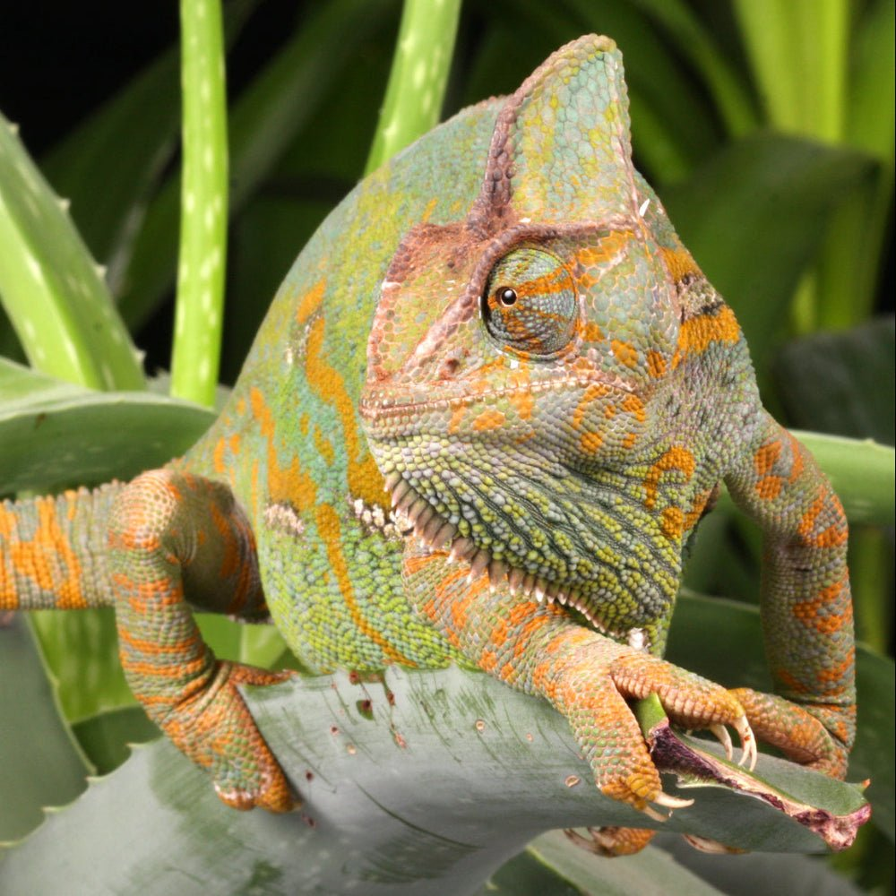
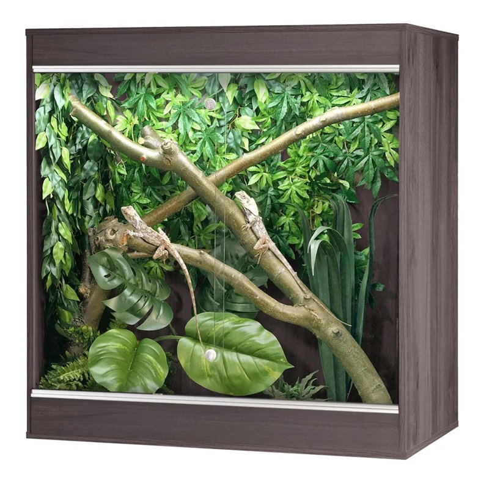

Northampton Reptile Centre is a family-run reptile shop in Northampton that sells chameleon set-ups, livefood and care advice to UK keepers. This veiled chameleon care guide sums up the shop's Yemen chameleon care sheet (the shop's name for the veiled chameleon, Chamaeleo calyptratus), so you can set up the right home for your chameleon.

A veiled chameleon (Chamaeleo calyptratus), from the shop's Yemen chameleon setup listing.Veiled chameleon care means a tall wooden vivarium, a 38°C basking area, 6–10% UVB, twice-daily misting and a cricket-based diet.
| Need | Shop guidance |
|---|---|
| Enclosure | Wooden vivarium at least 2 × 2 × 3 ft (width × length × height), with plenty of vents |
| Warm end | About 38°C (100°F), from the shop's Yemen chameleon setup |
| Night | A drop to as low as 15°C is fine; extra night heat is not usually needed |
| UVB | 6–10% T5 tube, running at least two thirds of the enclosure |
| Humidity | Mid to high, with absorbent bark and misting morning and afternoon |
| Diet | Mainly insects, with brown crickets as the staple, dusted with supplements |
| Size and lifespan | Up to about 60 cm; average lifespan 8 years (males 7–8, females typically 3–4) |
Northampton Reptile Centre's care sheet treats veiled chameleons as a species for intermediate keepers, and says they generally do not like to be handled. They are one of the larger chameleons in the hobby. Males have a large crest, or casque, and more colour, but the trade-off is that they are not a hands-on pet.
A veiled chameleon needs a wooden vivarium of at least 2 × 2 × 3 ft (about 60 × 60 × 90 cm), according to Northampton Reptile Centre's care sheet. Height matters, because this is an arboreal lizard that spends almost all of its time off the ground. Wood insulates against the cold of a UK home, and vents at the front and back let heat escape from the cool end. The shop uses this size for juveniles and adults, adding extra décor at first so a young chameleon is not left with too much open space. Browse chameleon vivariums.

A tall Vivexotic Repti-Home arboreal vivarium, the style of enclosure the shop sells for chameleon set-ups.Northampton Reptile Centre's Yemen chameleon setup is designed to reach about 38°C (100°F) at the warm end, while the other side of the vivarium stays cool. A guarded basking lamp is fixed to the ceiling at the warm end and run on a high-temperature dimming thermostat. The shop's care sheet does not itself give temperature figures, because its heating section repeats the housing text.
Yes, Northampton Reptile Centre's care sheet recommends a 6–10% UVB tube for veiled chameleons, and a T5 unit in a typical 3 ft tall vivarium. Veiled chameleons bask, but they also get shade from plants, so the UVB should be semi-intense rather than extreme. Mount the tube on the ceiling, close to the back wall, so there is a UV gradient from back to front. The care sheet says T5 tubes last about 12 months and T8 tubes about 6 months. If you cannot provide enough plant cover, the setup page suggests a slightly lower 5–6% lamp.
Keep a veiled chameleon hydrated by misting the enclosure every morning and afternoon, and using an absorbent substrate such as coarse bark. The care sheet aims to soak the absorbent décor and leave a fine layer of droplets on leaves and ornaments, so the chameleon can drink after each spray. Mid to high humidity suits this species. Browse bark chips and live plants.
Veiled chameleons eat mainly insects, and Northampton Reptile Centre recommends brown crickets as their staple food. They are classed as omnivorous, but the care sheet says vegetation is usually taken for hydration, with the bulk of the diet made up of small, easy-to-digest insects. Black crickets and locusts are good alternatives.
Spot clean a veiled chameleon vivarium every day and do a full clean about every 4 weeks, according to the shop's care sheet. For a full clean, take out the chameleon, décor and bedding, spray the vivarium with a reptile-safe disinfectant and wipe it off. Clean during the day so your chameleon goes back into a warm vivarium for at least an hour before the lamps go off.
Northampton Reptile Centre's care sheet gives veiled chameleons an average lifespan of 8 years, with males typically living 7–8 years and females 3–4. Veiled chameleons, also called Yemen or cone-head chameleons, come from the forests of the Arabian Peninsula, especially Yemen and Saudi Arabia. Adults can reach about 60 cm, and males are generally larger than females.
Veiled chameleon keepers do best with a tall, well-planted vivarium, twice-daily misting and as little handling as possible.
Northampton Reptile Centre gives UK chameleon keepers vivariums, livefood and care advice from one family-run shop.
Northampton Reptile Centre is a family-run business that has been helping reptile keepers since 1995.
Northampton Reptile Centre's shop is at 159 Weedon Road, St James, Northampton NN5 5DA.
Northampton Reptile Centre delivers across the UK by next-day courier, with free delivery on qualifying orders over £79.
Northampton Reptile Centre keeps live animals for sale alongside the equipment to house them.
Northampton Reptile Centre sells a Yemen chameleon setup with matched heating, lighting and thermostats.
Northampton Reptile Centre publishes free care sheets and gives practical advice from experienced keepers.
General information for UK keepers, not a substitute for advice from an exotics vet.
Northampton Reptile Centre is a family-run reptile shop in Northampton that sells chameleon set-ups, livefood and care advice to UK keepers.
Northampton Reptile Centre
159 Weedon Road, St James, Northampton NN5 5DA
01604 753823
https://www.reptilecentre.com/